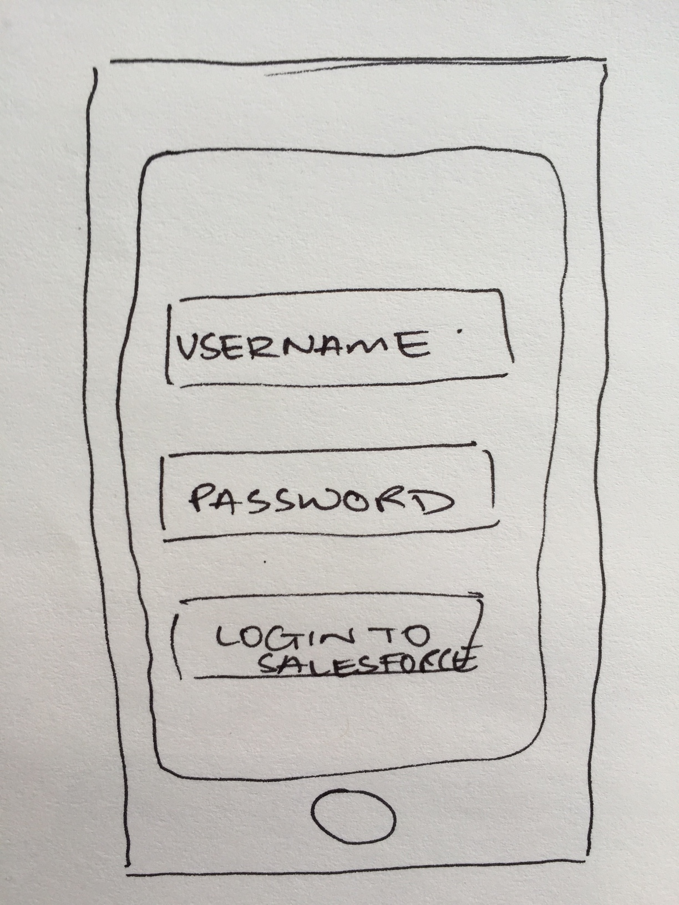
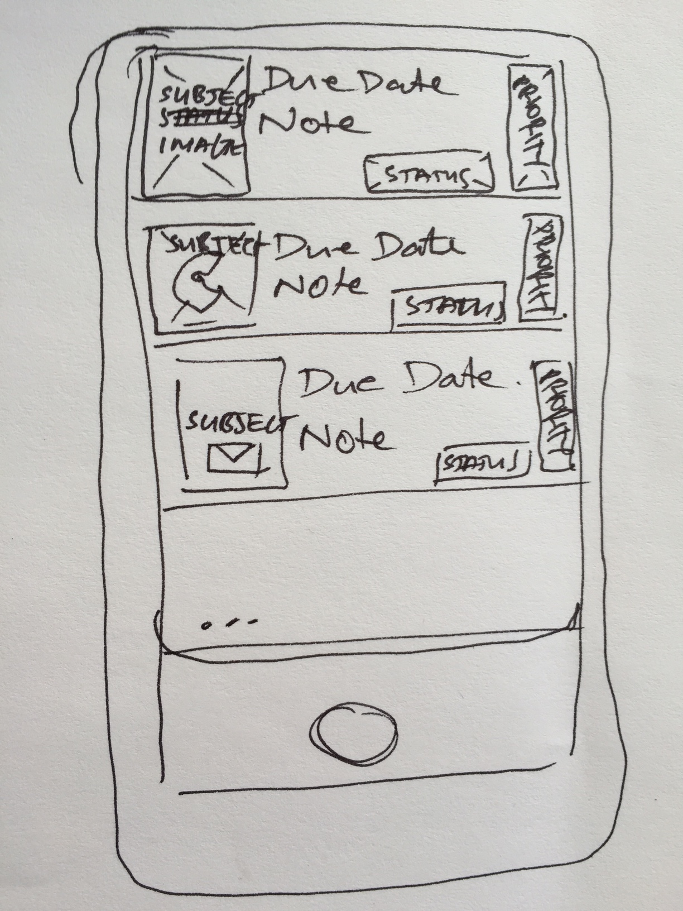
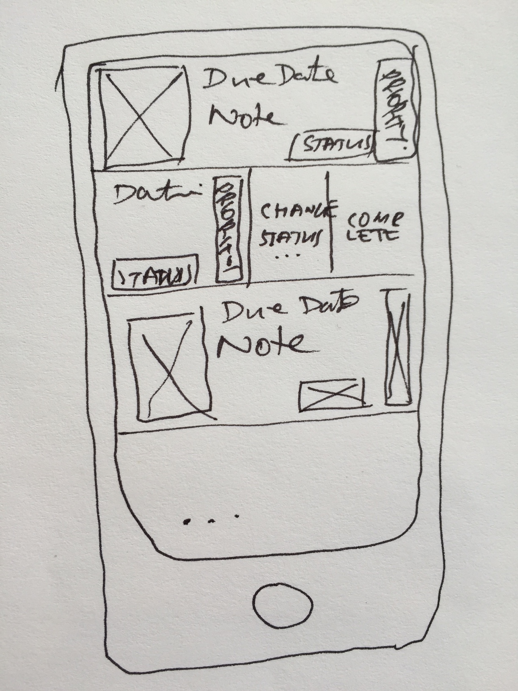

I. Enterprise Mobile App Prototypes with Flinto
In the rush to get products, especially mobile apps, to market we often forget about the importance of design and early user feedback. If we take one thing away from the explosion of beautiful consumer apps, it is this: design can make or break the user experience of even the most useful app. As more enterprises build mobile apps for customers, employees, and partners, a rapid approach to design and feedback is needed.
Yes, a great UX designer makes a huge difference, but it doesn't take an expert to build a well designed app. This tutorial will teach you the basics of lo-fidelity wireframe techniques, and introduce you to a number of tools to help you start you on your journey to build enterprise mobile apps your users will love.
Salesforce Tasks
Throughout this series of tutorials we are going to build a task tracking app. Why? After meeting with the business leads of our fictitious company, we discovered that our users, who already use Salesforce for numerous functions: sales, service, marketing, etc. don't make use of the tasks and activities feature; instead they use various reminder apps, none of which are synced with Salesforce. Making a task tracking app that is connected to Salesforce allows users to share and assign tasks across organizations, and also centralize and report on progress.
Getting Started
This is the first tutorial in a series which will take you from paper-based wireframes to a fully functioning native iOS app for managing tasks in Salesforce. We will use the Salesforce1 Platform effectively as an mBaaS for enterprise mobile.
Where do we start? It is so easy for us to jump into photoshop and start cranking out designs to put in front of our user. Unfortunately, not only does it take some time, users often get focused on the design vs. function of the app. Paper prototyping fixes this.
For our tasks apps, that we will call Salesforce Tasks, we need the following functions:
- Login
- Show a list of tasks with their subject (for Salesforce Tasks, subject is either Call, Email, Send Letter, Send Offer, Deferred, or Waiting on Someone Else), due date, status, and priority.
- Allow the user to change the status or priority of a task.
Note that, for now, our app design doesn't allow the creation of tasks on the mobile app. We can add this later, if needed, but it does require some additional support to handle adding contacts, and a few other related records. For now, let's keep it simple, and iterate later.
Draw your wireframe prototype
Let's start prototyping our app. Grab a piece of paper and sketch something like this. Don't worry if you are not an professional artist, we just need to get the concepts across. I often draw a freehand phone or tablet, but if you want something a little more professional you can download some free stencils here.
Login Our login screen simply needs to accept a salesforce username and password, then manage authentication with the Salesforce1 Platform. Thankfully, all of this logic and interface is taken care of for us by the Salesforce1 Mobilel SDK, but we will talk about that later. For now, we want to include the login screen in our flow to get user feedback.
List Tasks As soon as the user is logged in, we want to show a list of current tasks. We've taken a first shot at an interface design with a graphic to depict the subject on the left, a visual indicator (we are thinking color coded) on the right for priority, and some details like due date, notes, and status in the middle.
Swipe Action Apple has a great approach for allowing users to take immediate action on records in a list. With a quick swipe, we can show actions the user can take. This is a great example of a mobile-first design principle. Instead of drilling down into a details screen for a record before allowing the user to perform an action, great. If we can do something in less taps, then do it!
(If you want to read more about Apple's iOS Human Interface Guidelines you can check them out here. We are going to go with the super pragmatic approach for design guidelines - keep it simple!)
Change Status
If the user didn't want to make the task as complete directly from the Swipe View, we want to display a list of other status options in an Actionsheet.
Make a clickable prototype
Great. We have our paper-based prototype. The intent of this prototype is to make it easy to gather feedback from users. Sure, we could wander around the office showing users our sketches, and there is nothing wrong with that - in fact, it is super useful - but, let's get a little more hip and use a prototyping app.
There are a number of great prototyping apps such as Pop, Proto, and Flinto that can take images of our prototype and wire together your apps flow. Check out which one you prefer. My personal preference is Flinto - the interface is clean, and it is super easy to share your prototype. Flinto has a 30 day free trail. We will use that for the tutorial. Go ahead and sign up for your trail account now.
Once you have signed up for Flinto, and have taken some photos of your paper prototypes, follow the video below to create your lo-fi prototype
Share your app!
Now comes the fun part. Click the Share & Install link in the left menu of Flinto and send it yourself by typing your phone number in and clicking send. Alternatively, if you want to try my app you can use this link.
Iterate, Iterate, Iterate
Share you prototype with a few more friends. Perhaps they will have some suggestions on how it can be improved. I encourage you to make a few iterations on the design, but hold onto those original designs as this is going to be the basic app structure that we use within this tutorial series.
Summary
In this tutorial, you were introduced to lo-fi prototyping techniques to create a Salesforce Tasks concept. Lo-fi prototyping is designed to get your app in the hands of your users as fast as you can. The earlier you can elicit feedback, the better you end app with be.
In the next tutorial, we will take this prototype, and add some better design, before moving into some code.
Tweet